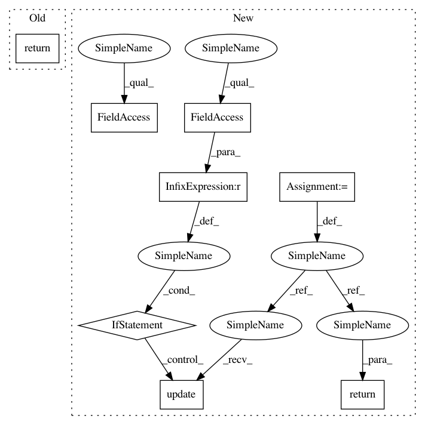

2665f09ab4159730c12ddbc3e643291f01234a80,niftynet/contrib/csv_reader/sampler_csv_rows.py,ImageWindowDatasetCSV,tf_shapes,#ImageWindowDatasetCSV#,90
Before Change
// return {**self.window.tf_shapes, **self.csv_reader.tf_shapes}
// else:
// return {**self.window.tf_shapes}
return self.window.tf_shapes
@property
def tf_dtypes(self):
After Change
returns a dictionary of sampler output tensor shapes
assert self.window, "Unknown output shapes: self.window not initialised"
shape_dict = self.window.tf_shapes
if self.csv_reader is not None:
shape_dict.update(self.csv_reader.tf_shapes)
return shape_dict
@property
def tf_dtypes(self):
In pattern: SUPERPATTERN
Frequency: 4
Non-data size: 8
Instances
Project Name: NifTK/NiftyNet
Commit Name: 2665f09ab4159730c12ddbc3e643291f01234a80
Time: 2018-08-11
Author: wenqi.li@ucl.ac.uk
File Name: niftynet/contrib/csv_reader/sampler_csv_rows.py
Class Name: ImageWindowDatasetCSV
Method Name: tf_shapes
Project Name: allenai/allennlp
Commit Name: 57956e789b8568bbb618436d2d52f9bbfac65a36
Time: 2019-04-23
Author: nelson-liu@users.noreply.github.com
File Name: allennlp/models/simple_tagger.py
Class Name: SimpleTagger
Method Name: get_metrics
Project Name: NifTK/NiftyNet
Commit Name: 2665f09ab4159730c12ddbc3e643291f01234a80
Time: 2018-08-11
Author: wenqi.li@ucl.ac.uk
File Name: niftynet/contrib/csv_reader/sampler_csv_rows.py
Class Name: ImageWindowDatasetCSV
Method Name: tf_dtypes
Project Name: epfl-lts2/pygsp
Commit Name: fae8722dbfceab528a91a7e743f2bac5c632d488
Time: 2018-11-05
Author: michael.defferrard@epfl.ch
File Name: pygsp/filters/rectangular.py
Class Name: Rectangular
Method Name: _get_extra_repr